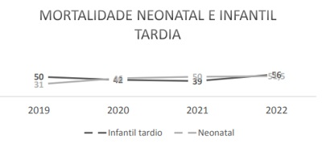
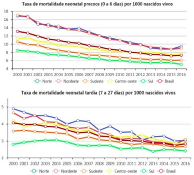
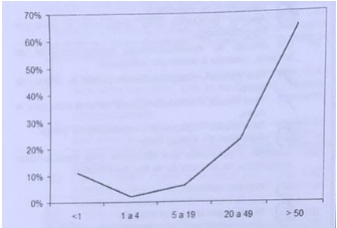
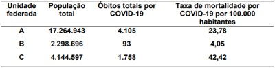
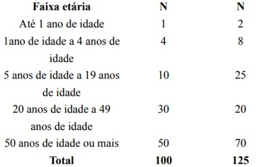
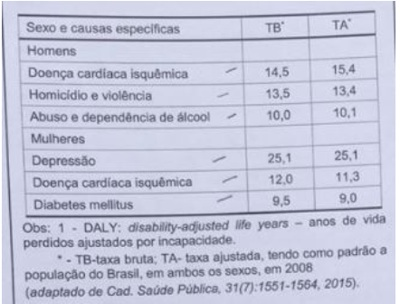
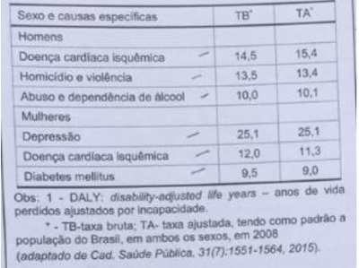
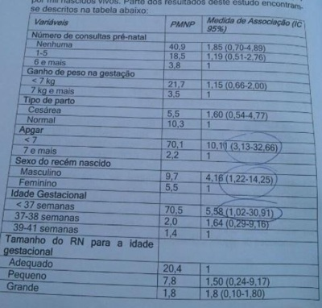
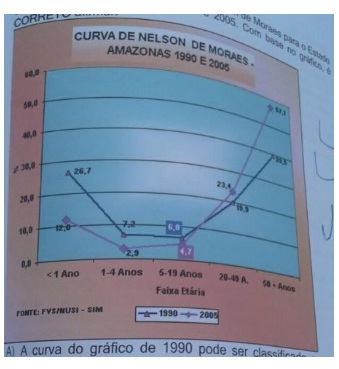

Questão 1 · Medicina Preventiva · 4000194518Gestante de 36 anos, portadora de sequela valvar mitral de etiologia reumática, entra em trabalho de parto com 38 semanas e 4 dias de idade gestacional. Durante os primeiros procedimentos para condução do caso, a parturiente desenvolve um edema agudo de pulmão, evoluindo com insuficiência respiratória e óbito ainda no centro obstétrico. De acordo com os conceitos relacionados à mortalidade materna, como podemos classificar esse óbito?
A Óbito materno por causa externa.
B Óbito materno por causa obstétrica direta.
C Óbito materno acidental.
D Óbito materno por causa obstétrica indireta.
E Óbito por causa materna.
Questão 2 · Medicina de Família e Comunidade · 4000193913Um estudo sobre a mortalidade infantil foi desenvolvido em Paracatu-MG, obtendo os seguintes resultados: Analisando o gráfico, marque a resposta correta.

A O período infantil tardio é o mais afetado por causas genéticas e não ambientais, apesar de não apresentar um coeficiente crescente de óbito.
B A regularidade nos óbitos do período infantil tardio mostra a necessidade de intervenções políticas na atenção a esse grupo.
C O período neonatal é o mais afetado por causas genéticas e não ambientais e apresenta um coeficiente crescente de óbito.
D O desenvolvimento de atividades de aconselhamento genético para evitar óbitos no período infantil tardio é a medida mais eficaz de prevenção.
E Pelo número de óbitos observado no gráfico, não é necessário intervenções preventivas para o controle dos mesmos.
Questão 3 · Coef iciente ou Taxa de Mortalidade Inf antil · 4000190557A seguir são apresentados dois gráficos da taxa de mortalidade neonatal precoce (0 a 6 dias) e taxa de mortalidade neonatal tardia (7 a 27 dias) do Brasil e Grandes Regiões no período de 2000 a 2016. Fonte: Sim/SINASC e busca ativa. Analise a série histórica do período apresentado (2000 a 2016) da taxa de mortalidade neonatal precoce e tardia. Assinale a alternativa correta.

A A mortalidade neonatal precoce é maior do que a tardia, e os gráficos exprimem maiores diferenças entre as regiões. Enquanto, em 2016, a mortalidade neonatal precoce variou de 5,1 (Sul) a 9,5 (Norte); a tardia se manteve entre 1,9 (Sul) e 2,6 (Nordeste).
B A mortalidade neonatal precoce é maior do que a tardia, não havendo diferenças entre as regiões. Em 2016, se manteve em todas as regiões em torno de 6,5 a mortalidade neonatal precoce; a tardia se manteve entre 4 e 5.
C A mortalidade neonatal precoce é menor do que a tardia, sendo bastante distinta entre as regiões. Enquanto, em 2016, a mortalidade neonatal precoce variou de 1,9 (Sul) a 2,6 (Nordeste); a tardia variou de 5,1 (Sul) a 9,5 (Norte).
D Tanto a taxa de mortalidade neonatal precoce quanto a tardia, tem-se mantido abaixo de 8 desde 2010, para o Brasil e em todas as regiões: Sudeste, Sul, Norte, Nordeste e Centro-oeste.
Questão 4 · Razão de Mortalidade Proporcional RMP ou Índice de SwaroopUemura · 4000190121Uma localidade com bons indicadores de saúde apresenta índice de
A primeiro nível e curva de Nelson Moraes tipo I.
B primeiro nível e curva de Nelson Moraes tipo IV.
C quarto nível e curva de Nelson Moraes tipo I.
D quarto nível e curva de Nelson Moraes tipo IV.
Questão 5 · Curvas de Nelson de Moraes · 4000190082As curvas de Nelson-Moraes podem ser utilizadas como instrumento de avaliação do nível de saúde de uma determinada população. De acordo com o gráfico acima, assinale a alternativa que apresenta, respectivamente, o nível de saúde representado e o indicador necessário para a elaboração do gráfico.

A regular / coeficiente de letalidade.
B baixo / coeficiente de natalidade.
C elevado / coeficiente de mortalidade proporcional por idade.
D regular / coeficiente de mortalidade proporcional por idade.
Questão 6 · Mortalidade Específ ica · Indicadores especiais de mortalidade · 4000189107O Coe ciente de Mortalidade Geral (CMG) estima a probabilidade de morrer de um indivíduo da população geral e é obtido pela relação entre o número de:
A Óbitos e o número de nascimento anual em um município.
B Óbitos e o número de habitantes em um determinado período e local.
C Nascimentos e o número de habitantes anual em um hospital.
D Óbitos, o número de nascimentos e o número de habitantes em um determinado período e local.
Revisar: possível letra faltando em enunciado
Questão 7 · Morbimortalidade por grupo de causas · Indicadores especiais de mortalidade · 4000189106Indicam a probabilidade de ocorrência do evento, relacionando o número de indivíduos com determinada doença e a população sujeita ao risco de adquiri-la:
A Mortalidade proporcional.
B Neonatal precoce.
C Mortalidade absoluta.
D Coeficientes de morbidade.
Questão 8 · Mortalidade Geral · 4000188648Os indicadores de saúde são essenciais para analisar a situação de uma coletividade, fazer comparações e avaliar mudanças ao longo do tempo. Observe o Quadro 1 e responda às questões 52 a 55. Quadro 1 – Dados ctícios sobre óbitos e população residente. Cidade X, 2022. 1 – Dados ctícios sobre óbitos e população residente. Cidade X, 2022. Dados sobre: Total de óbitos por todas as causas (a); Óbitos de menores de 1 ano de idade (b); Óbitos de mulheres em todas as idades (c); Óbitos de homens em todas as idades (d); Óbitos por câncer de próstata (e); Óbitos de mulheres na gravidez, parto e puerpério (f); População total (g); Nascidos vivos (h). Assinale a alternativa que contém a fórmula CORRETA para o cálculo do indicador Coe ciente Geral de Mortalidade na cidade X, em 2022.
A a / g x 100;
B a / g x 1.000;
C a / f x 10.000;
D a / h x 1.000;
E a / h x 100.
Revisar: possível letra faltando em enunciado
Questão 9 · Coef iciente ou Taxa de Mortalidade Inf antil · 4000188646Os indicadores de saúde são essenciais para analisar a situação de uma coletividade, fazer comparações e avaliar mudanças ao longo do tempo. Observe o Quadro 1 e responda às questões 52 a 55. Quadro 1 – Dados ctícios sobre óbitos e população residente. Cidade X, 2022. 1 – Dados ctícios sobre óbitos e população residente. Cidade X, 2022. Dados sobre: Total de óbitos por todas as causas (a); Óbitos de menores de 1 ano de idade (b); Óbitos de mulheres em todas as idades (c); Óbitos de homens em todas as idades (d); Óbitos por câncer de próstata (e); Óbitos de mulheres na gravidez, parto e puerpério (f); População total (g); Nascidos vivos (h). Assinale a alternativa que contém a fórmula CORRETA para o cálculo do indicador Coe ciente de Mortalidade Infantil na cidade X, em 2022.
A b / g x 100.
B b / h x 100.
C f / g x 1.000.
D b / h x 1.000.
E b / a x 100.
Revisar: possível letra faltando em enunciado
Questão 10 · Mortalidade Materna · 4000188645Os indicadores de saúde são essenciais para analisar a situação de uma coletividade, fazer comparações e avaliar mudanças ao longo do tempo. Observe o Quadro 1 e responda às questões 52 a 55. Quadro 1 – Dados ctícios sobre óbitos e população residente. Cidade X, 2022. 1 – Dados ctícios sobre óbitos e população residente. Cidade X, 2022. Dados sobre: Total de óbitos por todas as causas (a); Óbitos de menores de 1 ano de idade (b); Óbitos de mulheres em todas as idades (c); Óbitos de homens em todas as idades (d); Óbitos por câncer de próstata (e); Óbitos de mulheres na gravidez, parto e puerpério (f); População total (g); Nascidos vivos (h). Assinale a alternativa que contém a fórmula CORRETA para o cálculo do indicador Coe ciente de Mortalidade Materna na cidade X, em 2022.
A f / h x 100.000.
B b / h x 100.000.
C f / g x 100.000.
D b / h x 1.000.
E b / a x 1.000.
Revisar: possível letra faltando em enunciado
Questão 11 · DALY · 4000188615Um secretario municipal de saúde precisa identi car grupos de pessoas que se bene ciariam de uma intervenção voltada a reduzir incapacidades prematuras. O secretário solicita que um funcionário desenvolva uma proposta que utilize um indicador para auxiliá-lo a tomar essa decisão. O indicador que serviria melhor para esse propósito é:
A Taxa de letalidade.
B Taxa de mortalidade padronizada.
C Taxa bruta de mortalidade.
D Anos de vida perdidos ajustados por incapacidade.
E Excesso de incapacidade.
Questão 12 · Letalidade · 4000188559Uma doença aguda com alta taxa de letalidade:
A Tem baixo coeficiente de prevalência.
B Tem baixo coeficiente de incidência.
C Influencia fortemente a taxa de mortalidade geral de uma população.
D É sempre infecciosa.
Questão 13 · Mortalidade Inf antil e Perinatal · 4000188231Sabe-se que as taxas de mortalidade infantil re etem condições de saúde e de vida precárias, sendo considerado um dos indicadores mais sensíveis à situação de saúde e condição social. A mortalidade infantil pode ser subdividida em neonatal (precoce e tardia) e pós-neonatal. Sobre estas taxas podemos afirmar:
A A cobertura e qualidade de assistência pré-natal e perinatal têm importância, principalmente, na taxa de mortalidade pós-neonatal.
B Os agentes infecciosos e fatores nutricionais têm grande impacto na taxa de mortalidade neonatal tardia.
C Em regiões mais desenvolvidas, entre as causas de mortalidade neonatal destacam-se anomalias congênitas enquanto naquelas menos desenvolvidas, condições preveníveis pela assistência adequada à gestação e parto ganham destaque.
D De modo geral, em cenários com condições mais precárias, conforme a taxa de mortalidade infantil diminui, os óbitos neonatais tendem a diminuir mais rapidamente que os óbitos pós-neonatais.
E O denominador da taxa de mortalidade infantil é o número de partos realizados no respectivo período.
Questão 14 · Letalidade · 4000188036Em uma determinada comunidade, a letalidade da dengue foi de 10% no ano de 2020. Durante esse ano ocorreram 50 óbitos pela doença. Qual o número de casos de dengue nesta comunidade?
A 5.000 casos
B 500 casos
C 250 casos
D 2.500 casos
E 1.000 casos
Questão 15 · Letalidade · 4000188030Um indicador que relaciona o número de óbitos por determinada doença e o número de pessoas que foram acometidas por tal doença diz respeito à:
A incidência.
B mortalidade.
C prevalência.
D letalidade.
E morbidade
Questão 16 · Mortalidade Inf antil e Perinatal · 4000188028Para denominador do indicador de mortalidade infantil utilizamos:
A Número de óbitos de menores de 30 dias.
B Número de óbitos de menores de 1 ano.
C Número de mulheres em idade fértil.
D Nascidos vivos de mães residentes.
E Número de abortos.
Questão 17 · Mortalidade · 4000186378É correto definir a taxa de mortalidade como:
A um indicador sem importância para análises epidemiológicas.
B um parâmetro específico para doenças neoplásicas.
C a relação da gravidade de uma enfermidade com sua população.
D um indicador utilizado exclusivamente na pediatria.
E a proporção entre a frequência absoluta de óbitos e a população exposta no mesmo período de referência e no mesmo local.
Questão 18 · Coef iciente ou Taxa de mortalidade neonatal · 4000186375Para realizar o cálculo da taxa de mortalidade infantil neonatal, são utilizados apenas os óbitos:
A ocorridos no primeiro ano de vida.
B ocorridos na população de menores de 28 dias de idade.
C relacionados com doenças infecto-contagiosas.
D ocorridos a partir dos 60 dias de vida.
E que ocorrem até os 12 anos de idade.
Questão 19 · Rede Cegonha · 4000186112Durante a avaliação da consolidação da Rede de Atenção Materno Infantil em um estado brasileiro pela equipe certi cadora do Ministério da Saúde observou-se diferentes taxas de mortalidade neonatal precoce em duas maternidades: uma delas situada em hospital universitário (13 por 1000 nascidos vivos) e outra em uma pequena cidade do interior (7 por 1000 nascidos vivos). Em relação às conclusões quanto à qualidade dos serviços sabe-se que
A a maternidade do hospital universitário apresenta maior risco de morte entre os nascidos vivos na referida região de saúde.
B deve-se comparar as referidas taxas somente após a sua padronização segundo complexidade do atendimento e papel da maternidade da rede de atenção à saúde.
C a taxa de mortalidade neonatal precoce não se relaciona diretamente com a qualidade do serviços hospitalares e sim a mortalidade infantil pós-neonatal.
D a taxa de mortalidade neonatal precoce é a razão entre as mortes nos primeiros 28 dias a cada 1000 nascidos vivos.
Questão 20 · Coef iciente ou Taxa de mortalidade pósneonatal ou mortalidade tardia · 4000185764Define-se a Taxa de Mortalidade Pós-neonatal em determinado espaço geográfico e ano, como o:
A Número de óbitos até 27 dias de vida completos, por mil nascidos vivos.
B Número de óbitos entre 0 e 6 dias de vida completos, por mil nascidos vivos.
C Número de óbitos entre 7 e 27 dias de vida completos, por mil nascidos vivos.
D Número de óbitos entre 28 e 364 dias de vida completos, por mil nascidos vivos.
Questão 21 · Medicina Preventiva · 4000185201Os coe cientes de mortalidade auxiliam as vigilâncias epidemiológicas, juntamente com municípios, estados e Ministério da Saúde, a adotarem medidas para melhorar a qualidade de serviços e para articular uma ação nacional. Considerando-se os coeficientes de mortalidade, é correto afirmar que
A as curvas de Nelson de Moraes são curvas de mortalidade proporcional por idade.
B o indicador de Swaroop-Uemura informa a proporção de óbitos de indivíduos com menos de 50 anos de idade residentes em uma determinada localidade.
C estão incluídos, no coeficiente de mortalidade neonatal, óbitos de crianças que faleceram até o 42.o dia completo de vida.
D o coeficiente de mortalidade materna informa o risco de óbito materno em uma determinada localidade ao longo de um determinado período e deve ser calculado dividindo-se óbitos de gestantes até 27.o dia após o término da gestação pelo número de nascidos vivos.
E O coeficiente de mortalidade por causas externas não pode incluir óbitos por complicações de assistência médica, uma vez que esse tipo de causa deve ser calculado por coeficiente específico.
Revisar: possível letra faltando em enunciado
Questão 22 · A mortalidade materna no Brasil · Razão de Mortalidade Materna · 4000184770A razão de mortalidade materna é considerada um importante marcador de saúde e expressa situações de iniquidades entre diferentes regiões. No contexto de emergência da COVID-19, um estudo com dados do Sistema de Informações de Vigilância Epidemiológica da Gripe (SIVEPGripe) apontou que de 978 gestantes e puérperas diagnosticadas com Síndrome Respiratória Aguda Grave por COVID-19, 124 foram a óbito, sendo as falhas na assistência um dos principais fatores relacionados ao desfecho morte (Fonte: Souza A.S.R., Amorim M.M.R. Mortalidade materna pela COVID-19 no Brasil. Bras. Saúde Matern. Infan Pode-se afirmar, em relação à razão de mortalidade materna, que:
A pode sofrer influência da baixa sensibilidade da declaração de óbito quanto à capacidade de apresentar um registro de morte materna entre as verdadeiras mortes.
B a comparação dessa razão entre as mais diversas regiões do Brasil não sofre influência da cobertura do Sistema de Informação sobre Mortalidade.
C ela expressa a razão entre o número de óbitos maternos em uma determinada área e período e o número de mulheres em idade fértil na mesma área e período.
D a análise de tendência temporal dessa razão para uma determinada região não é influenciada por problemas nas estimativas de nascidos vivos.
Questão 23 · Outros · Mortalidade · 4000184755No dia 26 de fevereiro de 2020 foi noti cado o primeiro caso de COVID-19 no Brasil, um idoso com histórico de viagem pela Itália. Decorridos alguns meses após a introdução do vírus SARS-CoV-2, a análise dos óbitos segundo faixa etária apontou que as maiores taxas de mortalidade estavam relacionadas às pessoas maiores de 60 anos, sendo a presença de comorbidades neste grupo etário um dos principais fatores associados à evolução grave e ao óbito. A tabela a seguir apresenta informações sobre mortalidade por COVID-19 em três unidades federadas. Tabela. População total, número de óbitos e taxa de mortalidade por COVID-19 em três unidades federadas. Pode-se afirmar, com base no enunciado e nas informações da tabela, que:

A os valores das taxas de mortalidade geral apresentados na tabela permitem a comparação entre diferentes populações quanto ao risco de morte por COVID-19.
B a comparação de taxas de mortalidade por COVID-19 entre as diferentes unidades federadas demanda um processo de padronização visando controlar o efeito da estrutura etária.
C para afirmarmos qual unidade federada possui maior risco de morte deveríamos saber qual é a proporção de óbitos por COVID-19 em relação ao total de óbitos por todas as causas.
D o risco de morte por COVID-19 é maior na unidade federada A, em função do maior número de óbitos registrados.
Revisar: possível letra faltando em enunciado
Questão 24 · Incidência · 4000184560A Secretaria de Saúde está preocupada com o impacto da epidemia de dengue. Para verificar o risco de contrair dengue no ano de 2022, qual indicador deve ser acompanhado?
A Prevalência mensal de dengue em 2022.
B Incidência mensal de dengue em 2022.
C Letalidade da dengue em 2021.
D Mortalidade por dengue acumulada em 2022.
Questão 25 · Medicina Preventiva · 4000184452Considerando-se as alternativas a seguir, é correto a rmar que os fatores socioeconômicos têm maior influência no indicador de mortalidade
A neonatal.
B neonatal tardia.
C perinatal.
D pós-neonatal.
E geral.
Questão 26 · Coef iciente ou Taxa de mortalidade pósneonatal ou mortalidade tardia · 4000184028Um município observa um aumento do coeficiente de mortalidade infantil tardia em determinado ano. Assinale a alternativa correta.
A Esse indicador refere-se a óbitos de crianças menores de um ano de idade.
B O aumento do coeficiente referido é devido em geral a mortes por malformações congênitas.
C Esse indicador refere-se a óbitos de crianças maiores de 28 dias a 11 meses de idade.
D O aumento do coeficiente referido é devido à falta de acesso a leitos de terapia intensiva.
Questão 27 · COVID 19 · Mortalidade · 4000183558Em 2021, em Sorocaba, ocorreram 52 mil casos noti cados de Covid-19, 10 mil casos hospitalizados por Covid-19 e 3 mil óbitos por Covid-19. A população de Sorocaba em 2021 era estimada em 700 mil habitantes. Pode-se afirmar que
A a incidência de casos de COVID-19 foi de 1,4 por cem habitantes;
B a mortalidade específica porCOVID-19 foi de 4,3 óbitos por mil habitantes;
C a letalidade por COVID-19 foi de 4,3 óbitos por mil habitantes;
D a taxa de hospitalização dos casos de COVID-19 foi de 1,4%.
Questão 28 · Medicina Preventiva · 4000182877Entre 01 de janeiro e 31 de dezembro de 2020 ocorreram 180 acidentes fatais no trânsito em um determinado município. A medida de frequência de acidentes utilizada foi
A letalidade.
B prevalência pontual.
C prevalência no período.
D incidência.
Questão 29 · Medicina Preventiva · 4000182619Segundo as informações contidas no Sistema de Informação sobre Nascidos Vivos, 25% dos óbitos no primeiro ano de vida ocorrem na primeira semana de vida. O fator de risco isolado mais importante para a ocorrência da mortalidade infantil é:
A malformações congênitas.
B infecções congênitas.
C mãe adolescente.
D baixo peso ao nascer.
E idade materna avançada.
Questão 33 · · 4000181832Razão de Near Miss Materno RNMM ou Razão de quase perda e Condições Potencialmente Ameaçadoras à Vida CPAV O near miss materno (NMM) é um indicador de
A mortalidade.
B morbidade.
C letalidade.
D contaminação.
Questão 34 · · 4000181831Conceitos f undamentais óbito materno óbito por causa materna causas obstétricas diretas e causas obstétricas indiretas Leia o caso clínico. Adolescente de 17 anos provoca um aborto e chega à urgência com restos ovulares infectados. Mesmo com os procedimentos corretos, ela vai a óbito por septicemia, 35 dias depois. A morte, nesse caso, é considerada
A não materna.
B não obstétrica.
C obstétrica direta.
D obstétrica indireta.
Questão 35 · Razão de Mortalidade Materna tardia · 4000181678Gestante, 27 anos, com parto prematuro de 34 semanas gestacionais. Após alta para casa, evolui com infecção uterina, sepse e tem óbito confirmado 60 dias após o parto. Diante do exposto, qual é o tipo de morte?
A Morte materna direta.
B Morte obstétrica direta.
C Morte não materna, pois ocorreu 60 dias após o parto.
D Morte materna tardia.
E Morte pós-materna.
Questão 36 · Medicina Preventiva · 4000181304Uma epidemia atinge uma região do estado de São Paulo. Trata-se de uma doença altamente transmissível, de rápida evolução e a maioria dos casos evolui para a cura, embora alguns evoluam para óbito. Considerando um período de 30 dias, assinale a alternativa que apresenta a afirmação correta sobre essa doença.
A Trata-se de uma doença com alto coeficiente de prevalência e de letalidade.
B Seu coeficiente de incidência é alto e o de letalidade baixo.
C A doença tem alto impacto nos recursos de serviços de alta complexidade.
D O impacto sobre a saúde da população é baixo.
E O caminho mais curto para seu controle é a vacinação em massa.
Questão 37 · Mortalidade Geral · 4000181204O Coe ciente de Mortalidade Geral (CMG) representa o risco de óbito em uma população. É calculado por meio da relação entre o total de óbitos e o número de habitantes em determinado período de tempo. Apesar de ser um indicador muito conhecido apresenta limites. Assinale a alternativa que descreve, corretamente, o limite desse indicador.
A Apresenta distorções quando calculado em populações muito pequenas.
B Desconsidera a estrutura etária das populações.
C Não permite comparações em diferentes localidades.
D Não pode ser usado em conjunto com outros indicadores.
E Não pode ser utilizado em populações predominantemente idosas.
Revisar: possível letra faltando em enunciado
Questão 38 · Coef iciente ou Taxa de Mortalidade Inf antil · 4000181203O Coe ciente de Mortalidade Infantil (CMI) representa um dos principais indicadores para medir a vulnerabilidade social de uma determinada região. Sobre esse indicador, é correto afirmar que ele é calculado considerando o número de
A nascidos vivos no numerador.
B óbitos de menores de 28 dias de vida no numerador.
C óbitos de menores de 1 ano de idade no numerador.
D óbitos de menores de 1 ano de idade no denominador.
E óbitos totais no denominador.
Revisar: possível letra faltando em enunciado
Questão 39 · Mortalidade · 4000193718Em uma cidade de 1 milhão de habitantes, o total de óbitos foi 8 mil e, destes, 2.000 foram causados por doenças infecciosos, sendo que 400 tiveram como causa básica tuberculose. A mortalidade por tuberculose nesta população é de:
A 5%
B 2:1000
C 20%
D 4:1000
Questão 40 · Curvas de Nelson de Moraes · 4000193717Entre os indicadores de saúde relacionados, identi que o mais indicado para estudar na população a distribuição dos óbitos segundo a faixa etária:
A Prevalência.
B Letalidade.
C Curva de Nelson de Moraes.
D Índice da
Questão 41 · Razão de Mortalidade Proporcional RMP ou Índice de SwaroopUemura · 4000193716Nos países desenvolvidos, o índice de
A é próximo 100%.
B apresenta valores entre 80 e 90%.
C apresenta valores em total de 30%.
D tende a nulidade.
Questão 42 · Coef iciente ou Taxa de mortalidade neonatal · 4000193715Ao se dividir o número de óbitos em menores de 28 dias pelo total de nascidos vivos obtém-se o valor de coeficiente de:
A Mortalidade perinatal.
B Mortalidade infantil.
C Mortalidade infantil tardia.
D Mortalidade neonatal.
Questão 43 · · 4000185014Razão de Near Miss Materno RNMM ou Razão de quase perda e Condições Potencialmente Ameaçadoras à Vida CPAV Obstetrícia Considerando os critérios da Organização Mundial da Saúde (OMS) de morbidade materna grave, 2004, assinale a alternativa que apresenta uma ocorrência que deva ser notificada como near miss materno.
A Perda de consciência por duas horas.
B Histerectomia após infecção puerperal.
C Trombocitopenia com 65.000 plaquetas/mm³.
D Transfusão de duas unidades de concentrado de hemácias.
Questão 44 · Indicadores especiais de mortalidade · Mortalidade · 4000176109Em relação à mortalidade, analise as afirmações abaixo e, em seguida, assinale o item correto. I) O Ministério da Saúde adotou uma Declaração de óbito padronizada para todo o Brasil. II) A causa básica do óbito deve ser escrita em primeiro lugar, na parte I da Declaração de Óbito. III) A informação recolhida por Censos e Pesquisas Nacionais pode ser utilizada para estimar indicadores de mortalidade. IV) Quanto mais elevado o índice de Swaroop & Uemura tanto piores serão as condições de saúde e de vida de uma população. Assinale a alternativa correta:
A II.
B I e II.
C I e III .
D II e IV.
Questão 45 · · 4000176024Conceitos f undamentais óbito materno óbito por causa materna causas obstétricas diretas e causas obstétricas indiretas Puérpera, 8º dia pós-parto, apresenta quadro séptico de foco endometrial, evoluindo para óbito. Trata-se de morte materna:
A Obstétrica direta
B Obstétrica indireta
C Não obstétrica
D Acidental
Questão 46 · Letalidade · 4000176022A taxa de letalidade da doença meningocócica estima o risco de:
A Morrer pela doença em relação ao total de casos da doença
B Morrer pela doença em relação à população exposta
C Apresentar sequelas permanentes da doença
D Ocorrer a doença na população exposta
Questão 47 · Mortalidade Materna · 4000175652Leia o Texto abaixo para responder à questão. “... Razão, Taxa ou Coe ciente de mortalidade materna é o indicador utilizado para conhecer o nível de morte materna (...) calculado pela relação do n.º de mortes ´maternas´ ou de ´mulheres durante a gestação ou até 42 dias após o término da gestação´, independentemente da duração ou da localização da gravidez. É causada por qualquer fator relacionado ou agravado pela gravidez ou por medidas tomadas em relação a ela” (Laurenti, 2000). A equação que representa o indicador no Texto acima é:
A “Número de óbitos femininos, por 10 mil nascidos, na população residente em determinado espaço geográfico, no ano considerado” (OPAS, 2002).
B “Número de óbitos de gestantes, por 100 mil nascidos, vivos ou mortos, na população residente em determinado espaço geográfico, no ano considerado” (OPAS, 2002).
C “Número de óbitos de gestantes por diversas causas, por 100 mil nascidos, na população residente em determinado espaço geográfico, no ano considerado” (OPAS, 2002).
D “Número de óbitos femininos por causas maternas, por 10 mil nascidos vivos, na população residente em determinado espaço geográfico, no ano considerado” (OPAS, 2002).
E “Número de óbitos femininos por causas maternas, por 100 mil nascidos vivos, na população residente em determinado espaço geográfico, no ano considerado” (OPAS, 2002).
Revisar: possível letra faltando em enunciado
Questão 48 · Coef iciente ou Taxa de mortalidade neonatal precoce · 4000175574Para o cálculo do coe ciente de mortalidade neonatal precoce, deve-se utilizar, no numerador o seguinte número de óbitos:
A 0 a 6 dias de vida completos.
B 7 a 27 dias de vida completos.
C 0 a 27 dias de vida completos.
D 28 a 364 dias de vida completos.
Revisar: possível letra faltando em enunciado
Questão 49 · Razão de Mortalidade Proporcional RMP ou Índice de SwaroopUemura · 4000170491Observe, na tabela a seguir, alguns dados hipotéticos a respeito de mortalidade proporcional por faixa etária em duas cidades. Considerando os dados apresentados, é correto a rmar que o índice de Swaroop & Uemura (ou razão de mortalidade proporcional) é

A de 4% para a cidade X e 6,4% para a cidade Y.
B de 56% para a cidade Y.
C de 20% para a cidade Y.
D maior na cidade X que na cidade Y.
E igual em ambas as cidades.
Questão 50 · Coef iciente ou Taxa de mortalidade neonatal tardio · 4000170490Coef iciente ou Taxa de mortalidade neonatal precoce Para melhor compreensão da situação de saúde de determinada população, é recomendado que sejam analisadas algumas medidas de saúde coletiva, como, por exemplo, os coe cientes de mortalidade neonatal precoce (I), neonatal tardia (II) e pós-neonatal (III). Para cálculo desses coe cientes, é preciso considerar os óbitos nos seguintes dias de vida, respectivamente,
A I – 0 a 6 dias completos; II – entre 7 dias e 27 dias completos; e III – entre 28 dias e 364 dias completos.
B I – 0 a 7 dias completos; II – entre 8 dias e 30 dias completos; e III – entre 31 dias e 365 dias completos.
C I – 0 a 14 dias completos; II – entre 15 dias e 27 dias completos; e III – entre 28 dias e 364 dias completos.
D I – 0 a 1 dia completo; II – entre 2 dias e 6 dias completos; e III – entre 7 dias e 27 dias completos.
E I – 0 a 1 dia completo; II – entre 2 dias e 30 dias completos; e III – entre 28 dias e 365 dias completos.
Revisar: possível letra faltando em enunciado
Questão 51 · Medicina Preventiva · Coef iciente de Natalidade Taxa bruta de natalidade · 4000170087O conceito de nascido vivo refere-se à expulsão ou extração completa do corpo da mãe de um produto de concepção
A com sinal de vida e peso igual ou superior a 500 gramas, ou estatura igual ou superior a 25 centímetros.
B que, depois da separação, respire e apresente dois outros sinais de vida.
C com sinal de vida, desde que o cordão umbilical esteja cortado ou desprendida a placenta.
D com sinal de vida, independentemente da duração da gravidez.
Questão 52 · Medicina Preventiva · Letalidade · 4000170083De acordo com o Centro de Vigilância Epidemiológica do Estado de São Paulo, a situação da covid-19, no município de Botucatu e no estado de São Paulo, era a seguinte, nas datas a seguir indicadas. Obs: para ns de cálculos, se necessário, deve-se usar a população IBGE, estimada para 2021: Botucatu = 149.718 habitantes; estado de São Paulo = 46.649.432 habitantes. O coeficiente de letalidade por covid-19, no município de Botucatu, no ano de 2021 (até 31.08), foi de
A 2,64%.
B 203,7 por 100000 habitantes.
C 195,0 por 100000 habitantes.
D 1,71%.
Questão 53 · Letalidade · 4000170002Num município hipotético, com população de 100000 pessoas, foram diagnosticados, ao longo de um ano, 10 casos de câncer de colo de útero, sendo que 2 desses evoluíram para óbito. Para esse período, calcule os coe cientes para câncer de colo de útero solicitados nas questões seguintes. O coeficiente de letalidade é
A igual a 0,2%.
B igual a 2%.
C igual a 10%.
D igual a 20%.
E impossível de ser calculado com os dados fornecidos.
Revisar: possível letra faltando em enunciado
Questão 54 · Mortalidade Específ ica · 4000170001Num município hipotético, com população de 100000 pessoas, foram diagnosticados, ao longo de um ano, 10 casos de câncer de colo de útero, sendo que 2 desses evoluíram para óbito. Para esse período, calcule os coe cientes para câncer de colo de útero solicitados nas questões seguintes. O coeficiente de mortalidade é
A igual a 10.
B igual a 10%.
C igual a 10 por 100000.
D igual a 20 por 100000.
E impossível de ser calculado com os dados fornecidos.
Revisar: possível letra faltando em enunciado
Questão 55 · Curvas de Nelson de Moraes · Razão de Mortalidade Proporcional RMP ou Índice de SwaroopUemura · 4000169994Indicadores de Mortalidade Proporcional por Idade O Índice de Swaroop & Uemura e as Curvas de Moraes calculam o número de mortes por
A grupo etário.
B condição socioeconômica.
C doenças crônico degenerativas.
D doenças infectocontagiosas.
E sexo.
Questão 56 · Indicadores especiais de mortalidade · 4000169723O coe ciente de mortalidade geral da Dinamarca foi tão elevado quanto o do Zimbábue em 2018, iguais a 9 óbitos por mil habitantes. Isso se explica pelas diferenças existentes entre os dois países na
A qualidade da assistência à saúde.
B distribuição etária da população.
C condição climática.
D prevalência de dependência química.
Revisar: possível letra faltando em enunciado
Questão 57 · Indicadores de Mortalidade Proporcional por Idade · 4000169136Em uma cidade do interior do Maranhão com cem mil habitantes foi registrado um aumento de mortes por infarto agudo do miocárdio (IAM) no período da pandemia. Em 2020, ocorreram 12 mortes por IAM e 15 mortes em 2021. Podemos a rmar que:
A A mortalidade por IAM aumentou menos que 25% em 2021 com relação a 2020.
B A mortalidade por IAM aumentou 25% em 2021 com relação a 2020.
C A morbidade por IAM aumentou 25% em 2021 com relação a 2020.
D A letalidade por IAM aumentou 2,5 vezes em 2021 com relação a 2020.
E A letalidade por IAM aumentou 1,25 vezes em 2021 com relação a 2020.
Questão 58 · Principais medidas de f requência de doenças · Medicina Preventiva · Medidas de saúde coletiva · 4000168925No dia 01/09/2021, o Brasil apresentava aproximadamente 20.800.000 de casos confirmados e 580.000 óbitos por COVID-19. Considerando uma população total de 210 milhões de pessoas, qual era a taxa de letalidade aproximada pela doença à época?
A 0,2%
B 2,8%
C 9,9%
D 35,8%
Questão 59 · Medicina Preventiva · Indicadores especiais de mortalidade · 4000168367Em 2020, foram registradas no Brasil 194.976 mortes causadas por covid-19. A população estimada para o cálculo dos indicadores era de 213.320.748 habitantes. A que medida, dentre as abaixo, corresponde o índice calculado de 914 óbitos por covid-19 por milhão de habitantes em 2020?
A À taxa de letalidade.
B À taxa de mortalidade.
C À letalidade proporcional.
D À mortalidade proporcional.
Questão 60 · Curvas de Nelson de Moraes · 4000168245Ao se pretender realizar um estudo para comparar a situação de saúde das populações de um dado município em épocas diferentes, utilizando-se algum indicador de saúde, verifica-se que os únicos dados disponíveis são referentes ao número de mortes, às datas dos falecimentos e à idade dos falecidos. Nessa situação, é possível realizar o estudo:
A Utilizando-se os índices de Moraes.
B Utilizando-se o Índice de Prevalência Lápsica.
C Utilizando-se o coeficiente de mortalidade geral.
D Utilizando-se o coeficiente de mortalidade infantil.
E Somente se forem obtidos mais dados sobre a população.
Questão 61 · Coef iciente ou Taxa de Mortalidade Inf antil · 4000168243Com informações advindas do Sistema de Informação sobre Nascidos Vivos e do Sistema de Informações sobre Mortalidade, é possível calcular o seguinte indicador:
A Coeficiente de Mortalidade Geral.
B Taxa Bruta de Natalidade.
C Coeficiente de Mortalidade Infantil.
D Coeficiente de Letalidade.
E Coeficiente de Mortalidade por Sexo.
Questão 62 · Medicina Preventiva · A mortalidade inf antil no Brasil · Coef iciente ou Taxa de Mortalidade Inf antil · 4000167400COM OS DADOS DA TABELA RESPONDA A ALTERNATIVA CORRETA: Fonte: dados hipotéticos.

A O coeficiente de mortalidade infantil é maior na cidade A em relação à cidade B.
B A taxa de mortalidade neonatal é maior na cidade A em relação à cidade B.
C A razão de mortalidade materna é maior na cidade A em relação à cidade B.
D A mortalidade infantil proporcional é maior na cidade A em relação à cidade B.
Questão 63 · Medicina Preventiva · Conceitos f undamentais óbito f etal óbito inf antil e óbito na inf ância · 4000167399Foi realizado um estudo epidemiológico para conhecer o perfil de mortalidade infantil indígena e observaram-se 254 óbitos em crianças menores de um ano, noti cadas ao Sistema de Informação da Atenção à Saúde Indígena, no estado do Pará, no período de 2013 a 2018. Dos óbitos, 89 ocorreram entre o nascimento e seis dias, 29 foram entre sete e 27 dias, e 136 aconteceram no período de 28 a 364 dias de vida. Cento e trinta e sete óbitos (n=137) ocorreram em hospitais e as três principais causas foram: afecções perinatais (n=69), doenças do aparelho respiratório (n=48) e doenças infecciosas e parasitárias (n=40). O estudo também encontrou diferenciais na distribuição dos óbitos de acordo com as etnias. ASSINALE A ALTERNATIVA EM RELAÇÃO À PROPORÇÃO DE ÓBITOS NO PERÍODO NEONATAL TARDIO, A PROPORÇÃO DE MORTES POR INFECÇÕES PERINATAIS, E A PROPORÇÃO DE ÓBITOS FORA DO AMBIENTE HOSPITALAR:
A 11,42%; 18,90% e 53,93%.
B 53,54%; 27,16% e 46,06%.
C 11,42%; 27,16% e 46,06%.
D 53,54%; 27,16% e 53,93%.
Questão 64 · Mortalidade Inf antil e Perinatal · 4000166855O coeficiente de mortalidade perinatal é:
A o risco de se nascer morto, considerando as perdas fetais que ocorrem a partir da 28ª semana de gestação ou em que o concepto tem peso ao redor de 1000 gramas e cerca de 35 cm de comprimento.
B calculado de acordo com a expressão: óbitos ocorridos no período perinatal/perdas fetais. Esse resultado deve ser multiplicado por uma constante.
C calculado pela razão entre a soma das perdas fetais precoces e dos óbitos neonatais tardios, e todos os nascimentos, incluindo os natimortos e os nascidos vivos.
D a expressão do risco de morte ao longo do período perinatal.
Questão 65 · Mortalidade · 4000166264Em epidemiologia, taxas de mortalidade ajustadas por idade podem ser utilizadas para
A determinar o número de mortes em um dado grupo etário das populações comparadas.
B eliminar o efeito das diferenças etárias das populações na comparação de suas mortalidades.
C estimar as idades de óbito quando faltam tais informações nas taxas brutas de mortalidade.
D corrigir as taxas brutas de mortalidade, estimando os erros de registro das idades.
Questão 66 · Coef iciente ou Taxa de Mortalidade Inf antil · 4000165406Com relação a mortalidade infantil, esta pode ser melhor definida como:
A óbitos ocorridos após o primeiro ano de vida
B engloba óbitos fetais e óbitos neonatais precoces
C óbitos ocorridos ao longo do primeiro ano de vida, antes de se completar a idade de um ano
D a taxa de mortalidade em menores de 12 anos de idade
Questão 67 · Outros Indicadores de Relevância em Saúde Pública · Indicadores especiais de mortalidade · 4000165217Assinale a alternativa correta no tocante a indicadores de nível de saúde.
A O coeficiente de mortalidade materna se refere a mortes decorrentes a parto.
B O coeficiente de mortalidade neonatal tem relação com óbitos de menores de 28 dias em certa área durante o ano.
C O coeficiente de mortalidade perinatal se refere a nascidos mortos ocorridos em certa área durante o ano.
D O coeficiente de natalidade geral se refere a nascidos numa certa área durante o ano.
E O coeficiente geral de fecundidade tem relação com o número de gestações numa certa área durante o ano.
Questão 68 · Indicadores Socioeconômicos · Avaliação da Qualidade em Atenção Primária à Saúde · 4000165204Nos anos 1970, a redução anual da taxa de mortalidade infantil (TMI) foi de 3,2% alcançando 83/1000 nascidos vivos em 1980. A redução anual da TMI foi de 5,5% nas décadas de 1980 e 1990. No período entre 1990 e 2012, o país obteve mais uma diminuição expressiva na mortalidade infantil, passando de 47,1 óbitos por mil nascidos vivos em 1990 para 14,6 em 2012, diminuição de aproximadamente 70%. Essa queda se deu em todas as regiões brasileiras, com destaque para o Nordeste, cuja taxa, em 1990, situava-se muito acima das demais, alcançando 75,8 óbitos por mil nascidos vivos, e em 2012 sofreu queda para 17,1, menor que da Região Norte, estimada em 19,5. Segundo o enunciado,
A afirma-se que entre 1990 e 2012 houve uma sensível queda de mortalidade na infância.
B a diminuição da taxa de mortalidade infantil é um indicador estável, de difícil regressão.
C deduz-se que entre 1990 e 2012 houve uma melhora da atenção hospitalar às crianças.
D o conteúdo do texto dá indícios de melhora dos níveis de saúde, de desenvolvimento socioeconômico e de condições de vida entre 1990 e 2012.
E os programas materno-infantis foram os responsáveis principais pela queda da TMI entre 1990 e 2012.
Questão 69 · Conceitos f undamentais óbito f etal óbito inf antil e óbito na inf ância · Razão de Mortalidade Materna · 4000165013Declaração de óbito DO Atestado de óbito Mulher, 38 anos, com gravidez múltipla de 23 semanas, é admitida com eclampsia. Horas depois, ocorre o parto natural de dois conceptos. Ela evolui com edema agudo de pulmão, seguido de óbito. Não foi realizada necropsia. Na tabela abaixo, as características dos conceptos. Pode-se afirmar, no que diz respeito aos registros vitais e aos indicadores de saúde, que:
A a causa básica da morte da mulher é edema agudo de pulmão
B a causa básica da morte do concepto masculino é eclampsia materna
C os dois conceptos serão contabilizados nos denominadores do coeficiente de mortalidade fetal e da razão de mortalidade materna
D o concepto masculino e o feminino serão classificados, respectivamente, como óbito fetal precoce e óbito fetal tardio
Questão 70 · Mortalidade Geral · DALY · Curvas de Nelson de Moraes · 4000165009Um determinado país possui elevada cobertura vacinal para as doenças imunopreveníveis, percentagem de cobertura para água tratada e tratamento de esgoto acima de 95%, índice de desenvolvimento urbano elevado, atendimento médico público e gratuito de qualidade. Nestas condições deve-se esperar que esse país apresente também:
A o indicador de DALY (
B a curva de
C a curva de
D o indicador de
Questão 72 · · 4000164757Conceitos f undamentais óbito materno óbito por causa materna causas obstétricas diretas e causas obstétricas indiretas Mortalidade Materna Em uma cidade, em 2020, houve 10.000 nascidos vivos. Nesse mesmo ano houve 1 morte materna obstétrica direta, 1 morte obstétrica indireta, 1 morte materna não obstétrica e 1 caso de materna desse ano nessa cidade foi de:
A 2.
B 30.
C 4.
D 20.
Questão 73 · Medicina Preventiva · Letalidade · 4000164725Considerando-se o quadro abaixo: É correto afirmar que a letalidade de COVID-19 no Brasil é de:
A 1,84%.
B 2,16%.
C 2,78%.
D 3,16%.
E 3,85%.
Questão 74 · Coef iciente ou Taxa de Mortalidade Inf antil · 4000163588Em um município a população de menores de um ano é de 1.932 crianças para o ano de 2020. Foram registrados 815 nascidos vivos. Nesse período ocorreram 7 óbitos fetais, 2 óbitos em lactentes com idade entre 3 meses e 11 meses de vida, 10 óbitos em recém-nascidos com menos de sete dias de vida, e 1 óbito em recém-nascido com idade variando entre 7 e 27 dias de vida. Calcule o Coeficiente de Mortalidade Infantil para esse ano:
A 15,95/1000 nascidos vivos.
B 24,53/1000 crianças menores de um ano.
C 14,72/1000 nascidos vivos.
D 2,45/1000 crianças menores de um ano.
E 12,26/1000 nascidos vivos.
Questão 75 · Coef iciente ou Taxa de mortalidade pósneonatal ou mortalidade tardia · 4000163587Para o cálculo do coe ciente de mortalidade infantil pós-neonatal, em um determinado ano e localidade é necessário saber o número de óbitos em...
A maiores de 7 dias até os menores de 28 dias; total de crianças menores de um ano.
B maiores de 7 dias até os menores de 28 dias; total de nascidos vivos.
C menores de 8 dias; total de nascidos vivos.
D maiores de 28 dias até os menores de um ano; total de crianças menores de um ano.
E maiores de 28 dias até os menores de um ano; total de nascidos vivos.
Revisar: possível letra faltando em enunciado
Questão 76 · Mortalidade Geral · Medicina Preventiva · Mortalidade Inf antil e Perinatal · 4000163264Os indicadores de saúde são medidas sintéticas que contêm informações relevantes sobre determinados atributos e dimensões do estado de saúde, bem como o desempenho do sistema de saúde. Dessa forma, relacione os indicadores de saúde, na coluna da esquerda, com a sua descrição, na coluna da direita. (I) Mortalidade Materna. (II) Mortalidade Geral. (III) Mortalidade Proporcional. (IV) Mortalidade Infantil. (V) Indicador de Swaroop e Uemura. (A) Valores altos desse indicador se relacionam às regiões mais desenvolvidas e requerem, para seu cálculo, apenas a informação sobre os óbitos registrados, classificados em uma de duas grandes faixas etárias. (B) Permite avaliar iniquidades entre áreas ou regiões com diferentes níveis de desenvolvimento, considerada um excelente indicador de saúde. (C) É considerada um dos indicadores mais sensíveis a sua situação de saúde e condição social, pois se refere a um grupo populacional bastante vulnerável às condições de vida. (D) Capacidade de relacionar o nível de saúde de diferentes áreas no tempo, através de dados mais dedignos do que compõem os coeficientes mais específicos, mais difíceis de serem obtidos. (E) Indica a importância de uma causa ou grupo de causas de morte em uma determinada população, e pode ser utilizada no delineamento de prioridades na área da saúde. Assinale a alternativa que contém a associação correta.
A I-A, II-E, III-D, IV-C, V-B.
B I-B, II-D, III-E, IV-C, V-A.
C I-B, II-E, III-D, IV-A, V-C.
D I-E, II-A, III-B, IV-D, V-C.
E I-E, II-C, III-B, IV-D, V-A.
Questão 77 · Mortalidade Inf antil e Perinatal · 4000163261A tabela, a seguir, apresenta dados de nascidos vivos e óbitos infantis do Brasil, Paraná e Londrina, de 2019, segundo o Departamento de Informática do Sistema Único de Saúde (DATASUS). A partir desses dados, assinale a alternativa correta.

A A Mortalidade Neonatal Precoce apresentou o maior impacto sobre a Mortalidade Infantil do Brasil, diferentemente do estado do Paraná, para o qual o maior impacto foi a Mortalidade Pós-Neonatal.
B Em Londrina, em 2019, a Mortalidade Neonatal Tardia apresentou o maior impacto sobre a Mortalidade Infantil.
C O Coeficiente de Mortalidade Neonatal do Brasil, em 2019, foi menor que o Coeficiente de Mortalidade Pós- Neonatal.
D O Coeficiente de Mortalidade Perinatal no estado do Paraná, em 2019, foi de 5,47, inferior ao Brasil e ao município de Londrina.
E O estado do Paraná apresentou, em 2019, o menor valor de Coeficiente de Mortalidade Infantil se comparado ao Brasil e ao município de Londrina.
Questão 78 · Morbimortalidade por grupos etários · 4000173833O coe ciente de mortalidade geral por 1000 indivíduos nos países desenvolvidos europeus é mais alto quando comparado com o mesmo coeficiente em vários países em desenvolvimento. Assinale a CORRETA:
A A diferença se deve essencialmente à maior concentração de pessoas no terceiro mundo.
B Os maiores coeficientes de mortalidade nos países em desenvolvimento são resultantes da melhor capacidade de notificação.
C A diferença se deve principalmente à qualidade dos registros de mortes entre os países.
D A diferença no risco de morrer se deve às diferentes estruturas etárias das populações.
Revisar: possível letra faltando em enunciado
Questão 79 · Letalidade · 4000145538Dados publicados pelo Ministério da Saúde do Brasil, em setembro de 2020, estima a letalidade pelo coronavírus em torno de 3%, considerada elevada. É considerada uma doença de alta letalidade aquela em que:
A A probabilidade de deixar sequelas é elevada
B A probabilidade de apresentar sintomas graves é elevada
C A probabilidade de morrer é elevada, se não for instituído o tratamento eficaz
D A proporção de óbitos entre os diagnosticados com a doença é elevada
Questão 80 · Mortalidade · 4000145536Análises preliminares de dados de mortalidade apontam que o risco de morrer por doenças cardiovasculares no Brasil está diminuindo. Para verificar se esse resultado é observado nos estados brasileiros, deve-se estimar:
A A mortalidade proporcional específica por idade para as doenças cardiovasculares em cada estado brasileiro
B A proporção de anos potenciais de vida perdidos por doenças cardiovasculares em cada estado brasileiro
C A taxa de mortalidade específica por doenças cardiovasculares ajustada por idade em cada estado brasileiro
D A taxa de mortalidade específica por doenças cardiovasculares em cada estado brasileiro
Questão 81 · Morbimortalidade por grupos etários · Coef iciente ou Taxa de Mortalidade Inf antil · 4000144877A respeito dos dados de mortalidade infantil no Brasil, marque a resposta correta:
A A taxa de mortalidade infantil sofreu uma redução de 67,6% entre 1990 e 2015
B O Brasil não alcançou a meta estabelecida nos objetivos de desenvolvimento do milênio, em relação à redução da mortalidade infantil
C Traumas e acidentes domésticos são as principais causas de óbito no 1 ° ano de vida
D A maior redução das taxas de mortalidade infantil nos últimos 20 anos foi alcançada pelas regiões Sudeste e Sul
Questão 82 · A mortalidade inf antil no Brasil · 4000143566A redução na taxa de mortalidade infantil observada nas últimas décadas pode ser explicada pelos seguintes fatores, EXCETO:
A Redução da taxa de fecundidade.
B Aumento da escolaridade materna.
C Melhora do saneamento básico.
D Ampliação da cobertura vacinal.
E Aumento na proporção de partos cesáreos.
Questão 83 · Mortalidade Proporcional · 4000141175Um município noti cou os seguintes indicadores ao analisar grupos de causas básicas: mortalidade proporcional devido a doenças cardiovasculares de 30% e de causas externas de 11%; percentual de anos potenciais de vida perdidos de 11% por causas cardiovasculares e 30% por causas externas. ASSINALE A ALTERNATIVA CORRETA:
A As causas externas e as doenças cardiovasculares são as principais causas de morte no município.
B Os indicadores mostram o risco de morrer tanto por doenças cardiovasculares como por causas externas no município.
C A cidade tem grande percentual de idosos que se expõem a causas externas.
D Há grande contingente de óbitos precoces.
Questão 84 · Mortalidade Geral · Medicina Preventiva · Letalidade · 4000141174Em uma cidade de 1.000.000 habitantes, foram noti cados 1.000 casos e 50 mortes de uma doença aguda X no ano. O total de mortes de todas as causas foi 150. CALCULE O COEFICIENTE DE MORTALIDADE DA DOENÇA X POR 100 MIL HABITANTES, A MORTALIDADE PROPORCIONAL PELA DOENÇA E A LETALIDADE DA DOENÇA EM PORCENTAGEM, RESPECTIVAMENTE:
A 150; 15; 0,05.
B 150; 33; 0,5.
C 5; 33; 5.
D 5; 15; 33,3.
Questão 85 · Padronização de coef icientes de mortalidade · 4000137537Objetivando se dispor de padronização a ser utilizado, quando a distribuição dos óbitos por faixas etárias é conhecida e os contingentes populacionais envolvidos são pequenos, é:
A a não realização da padronização dos coeficientes.
B o método direto.
C a razão de mortalidade padronizada.
D o método indireto.
Questão 86 · Mortalidade · 4000129877O coe ciente de mortalidade especí ca por câncer de ovário é calculado pela razão entre o número de óbitos totais por câncer de ovário e
A a população total.
B os óbitos totais.
C os óbitos de mulheres.
D a população de mulheres.
E O número de mulheres na menacme.
Revisar: possível letra faltando em enunciado
Questão 87 · Mortalidade · 4000129876Uma das mais importantes vantagens dos dados de mortalidade em relação aos de morbidade é que
A a) estimam o acompanhamento longitudinal do adoecimento.
B b) alteram-se rapidamente com medidas que melhoram a saúde da população.
C têm maior disponibilidade a partir dos sistemas de informação.
D mostram o evento final esperado, após a totalidade das morbidades existentes.
E têm número baixo de acometidos, o que facilita as análises.
Questão 88 · · 4000129642Conceitos f undamentais óbito materno óbito por causa materna causas obstétricas diretas e causas obstétricas indiretas Em nosso meio, as principais causas de mortalidade materna e neonatal são, respectivamente:
A hemorragias e prematuridade.
B hemorragias e sepse neonatal.
C pré-eclâmpsia e prematuridade.
D infecção puerperal e sepse neonatal.
Questão 89 · Mortalidade Inf antil e Perinatal · Indicadores especiais de mortalidade · 4000130402Em uma região com população de 1.000.000 habitantes, registraram-se 12.000 óbitos na população total e 10.000 nascidos vivos no ano. Entre os óbitos, 80 crianças morreram antes de completar 28 dias e 20 com idade de 28 dias a 1 ano. SOBRE INDICADORES NA REGIÃO PODE- SE AFIRMAR QUE:
A A mortalidade proporcional de menores de 1 ano na região é maior que 12%.
B O coeficiente de mortalidade infantil tardia é de 20%.
C O coeficiente de mortalidade geral é de 120 por 1000 habitantes.
D A mortalidade infantil é de 10 por 1000 nascidos vivos.
Questão 90 · Letalidade · Incidência · Mortalidade · 4000110701Qual a alternativa que corresponde, respectivamente, aos indicadores de saúde estimados a partir das informações a seguir, visto que foram obtidos os seguintes valores: 5/100.00; 1/100.000 e 20%? Quadro. Casos notificados e óbitos por meningite bacteriana no Estado de São Paulo, no ano de 2013. Dados modificados para facilitar cálculos: *População residente em 2012, estimativa pelo IBGE. Fonte: SINAN/DDTR/CVE/CCD/SES-S

A Taxa de Letalidade, Coeficientes de Mortalidade e de Incidência.
B Coeficientes de Prevalência, de Mortalidade e Taxa de Letalidade.
C Coeficientes de Incidência, de Mortalidade e Taxa de Letalidade.
D Coeficientes de Incidência, de Mortalidade e de Prevalência.
Questão 91 · Mortalidade Materna · 4000099804O COEFICIENTE DE MORTALIDADE MATERNA É:
A Total de mortes de mulheres durante a gravidez e o parto dividido pelo total denascidos vivos, vezes 100 mil.
B Total de mortes de mulheres durante a gravidez, parto e/ou ao período pós-partoimediato (7 dias) dividido pela totalidade das mulheres em idade fértil, vezes 100 mil.
C Total de mortes de mulheres durante pré-natal, parto e/ou puerpério (42 dias) divididopelos nascidos vivos, vezes 100 mil.
D Total de mortes durante a gravidez, parto e/ou período pós-parto imediato (10 dias)dividido pela totalidade de mulheres grávidas, vezes 10 mil.
Questão 92 · Conceitos f undamentais óbito f etal óbito inf antil e óbito na inf ância · Morte f etal Óbito f etal OF · 4000053046Óbito fetal é a morte de um produto da concepção, antes de sua expulsão ou extração completa do organismo materno. Segundo a Organização Mundial da Saúde (OMS), esse conceito independe da duração da gravidez. Em relação ao tema, assinale a alternativa correta.
A Um grande número de autores prefere defini-lo a partir de 18 semanas de gestação.
B Em outras definições descritas na literatura, o limite inferior da idade gestacional podechegar a 28 semanas.
C Também podem ser classificados segundo sua relação com o momento do parto,somente sendo considerado no anteparto e nunca no intraparto.
D Alguns autores também utilizam como critério o peso do produto conceptual, quevaria entre 250 e 750g, ou combinações da idade gestacional com o peso de nascimento.
E De acordo com o momento em que acontecem, os casos de óbito fetal podem ser denominados precoces, quando ocorrem até 32 semanas de gestação, ou tardios, após essa idade gestacional.
Questão 93 · Mortalidade Materna · 4000030319A mortalidade materna ocorre, principalmente.
A no período gestacional.
B no trabalho de parto.
C no intraparto.
D no pós-parto.
Questão 97 · DALY · 4000106568A tabela apresentada utiliza o conceito de DALY (disability-adjusted life years - anos de vida perdidos ajustados por incapacidade). Qual a medida apontada por este indicador e sua sensibilidade às diferenças regionais?

A Morbidade e mortalidade; muito sensível
B Morbidade e mortalidade; pouco sensível
C Morbidade; muito sensível
D Morbidade; pouco sensível
Questão 98 · DALY · 4000106559Qual a alternativa que representa a análise dos dados fornecidos pela tabela apresentada? Tabela: Distribuição e taxas brutas (TB) e ajustadas (TA) de DALY¹ (por mil habitantes) segundo sexo e as três principais causas especí cas. Regiões do Brasil, 2008.

A As taxas brutas não devem ser usadas para subsidiar politicas públicas por serem dados obtidos diretamente
B As diferenças entre as taxas brutas e ajustadas podem ser atribuídas ao acesso aos serviços de saúde
C As taxas ajustadas devem ser usadas para subsidiar politicas públicas por serem dados padronizados
D As diferenças das taxas entre homens e mulheres podem ser atribuídas ao acesso aos serviços de saúde
Revisar: possível letra faltando em enunciado
Questão 99 · Indicadores especiais de mortalidade · 4000086091Determinado estudo mostrou que o risco de morte por acidente de trânsito, em 2016, foi maior na cidade X do que na cidade Y. A medida de frequência estimada, em cada cidade e o cálculo são, respectivamente:
A Mortalidade específica por causa; número de óbitos por acidente de trânsito em cada cidade + população de cada cidade em 2016.
B Mortalidade proporcional; óbitos por acidente de trânsito em cada cidade + total de óbitos em cada cidade em 2016.
C Risco relativo; mortalidade acidente de trânsito na cidade X + mortalidade acidente de trânsito na cidade Y em 2016.
D Razão de mortalidade proporcional, óbitos por acidente de trânsito na cidade X + óbitos por acidente de trânsito na cidade Y esperados na cidade X se tivesse a mesma mortalidade por acidente de trânsito da cidade Y em 2016.
Questão 100 · Mortalidade Materna · 4000086018Em 1990 a razão de mortalidade materna era de 139 óbitos por 100 mil, caindo para 68 óbitos por 100 mil em 2009, e para 44 óbitos por 100 mil em 2015. Além de ser ainda elevada, pode ser observada uma tendência de redução do ritmo de queda. Esta tendência por ser atribuída:
A Ao fracasso das políticas de saúde reprodutiva e planejamento familiar.
B A estratégia para a redução de óbitos por causa mal definida.
C Ao baixo aporte de recursos para o financiamento do SUS.
D A insuficiência de médicos obstretas na assistência pré-natal e ao parto.
Questão 101 · Mortalidade Materna · 4000052527Durante a pesquisa de casos de morte de mulher em idade fértil foi encontrado um caso de mulher de 35 anos por infecção generalizada iniciada na operação cesariana 60 dias após a cirurgia. Para fins estatísticos trata-se de
A Morte materna não obstétrica.
B Morte materna obstétrica direta.
C Morte materna obstétrica tardia.
D Morte materna obstétrica indireta.
E Morte materna não obstétrica tardia.
Questão 102 · Letalidade · 4000034651Se duas doenças (A e B) apresentam a mesma taxa de letalidade, é CORRETO afirmar que:
A A proporção de óbitos é a mesma para acometidos pelas doenças A ou B.
B A taxa de mortalidade é idêntica para as duas doenças, mas a mortalidade proporcional é diferente.
C Ambas as doenças têm a mesma taxa de mortalidade.
D O risco de morrer é semelhante, mas a gravidade é diferente para as duas doenças.
Questão 103 · Causas externas · 4000016596Os coe cientes de mortalidade medem a probabilidade de qualquer pessoa da população vir a morrer em um determinado local e ano. São excelentes indicadores da qualidade da saúde em uma determinada população, possibilitando a criação de programas específicos que visem a prevenção dessas mortes. Em relação a esses coe cientes, é INCORRETO a rmar que:
A O coeficiente de mortalidade por causas externas inclui os óbitos por acidentes de transporte e homicídios, mas não estão incluídos os óbitos por suicídio.
B No coeficiente de mortalidade materna, estão incluídos os óbitos de todas as mulheres durante a gestação ou durante 42 dias após o término da gestação por causas relacionadas ou agravadas pela gravidez.
C No coeficiente de mortalidade neonatal precoce, estão incluídos os óbitos de crianças até o sexto dia de vida, refletindo a qualidade da assistência pré-natal.
D O coeficiente de mortalidade por neoplasias malignas pode ser prejudicado por imprecisões nas declarações de óbitos.
Revisar: possível letra faltando em enunciado
Questão 104 · Morbimortalidade por gênero · 4000110875Numa população hipotética de 200.000 pessoas, num determinado ano, veri cou-se a existência de 200 casos de câncer de colo de útero. Foram registradas, no total, nesse período, 100 mortes, sendo 5% delas decorrentes desse tipo de câncer. O coeficiente de mortalidade pelo câncer de colo de útero é:
A Igual a 0,5 x 1000.
B Igual a 5 x 1000.
C Igual a 10 x 1000.
D Igual a 50 x 1000.
E Impossível de ser calculado com os dados apresentados.
Questão 105 · Mortalidade · 4000100143O coe ciente de mortalidade geral por 1.000 indivíduos nos países desenvolvidos europeus é mais alto quando comparado com o mesmo coeficiente em vários países em desenvolvimento. Assinale a CORRETA:
A A diferença se deve essencialmente à maior concentração de pessoas no terceiro mundo.
B Os maiores coeficientes de mortalidade nos países em desenvolvimento são resultantes da melhor capacidade de notificação.
C A diferença se deve principalmente à qualidade dos registros de mortes entre os países.
D A diferença no risco de morrer se deve às diferentes estruturas etárias das populações.
Revisar: possível letra faltando em enunciado
Questão 106 · Coef iciente ou Taxa de mortalidade perinatal · 4000085444O Brasil atingiu antecipadamente a meta de redução de dois terços das mortes na infância entre 1990 e 2015. No entanto, a meta de redução de três quintos da mortalidade materna não foi alcançada até o ano estabelecido. Com base nestas informações, pode-se afirmar, em relação aos indicadores de mortalidade materno- infantil, que:
A A mortalidade perinatal não é influenciada por erros na caracterização de natimortos e nascidos vivos.
B Há predominância do componente pós-neonatal entre os óbitos infantis apenas nas regiões norte e nordeste do Brasil.
C O número de nascidos vivos e o número de gestantes são os denominadores, respectivamente, da taxa de mortalidade infantil e da razão de mortalidade materna.
D A razão de mortalidade materna representa o risco da mulher em idade reprodutiva morrer durante a gravidez, parto ou puerpério, independentemente da causa da morte.
Questão 107 · Fatores que inf luenciam na mortalidade inf antil · 4000070825Segundo a síntese de indicadores sociais publicados pelo Instituto Brasileiro de Geogra a e Estatística (IBGE) em 2016, a taxa de mortalidade infantil em 2015 foi de 13,8 mortes por mil nascidos vivos, sendo a menor em 11 anos. Entretanto, as regiões mais pobres do país continuam a apresentar taxas de mortalidade quase duas vezes maior do que as mais ricas. Considerando os planos que possam ter contribuído para esse cenário, a ação/análise que se mostra mais efetiva para tais resultados é o (a):
A Aleitamento materno exclusivo por seis meses e complementado até os dois anos ou mais, pois é uma ação recomendada pela OMS e o Ministério da Saúde, visando reduzir tanto a mortalidade quanto morbidades infantis, tais como episódios de diarreia, infecções respiratórias, o risco de alergias, entre outros fatores.
B Controle da mortalidade infantil, que corresponde ao número de crianças que vão a óbito nos primeiros anos de vida, como um indicador importante para a análise do IDH. Entretanto, no Brasil, apesar de as taxas de mortalidade infantil terem diminuído nas últimas décadas, o índice continua muito elevado.
C Atendimento à gestante feito ao longo da gravidez, que é fundamental para o bebê nascer bem. Deve-se garantir que as consultas de pré-natal sejam mensais, sendo a primeira realizada até a 20ª semana de gestação, a fim de contribuir para a redução da mortalidade infantil e materna.
D Bolsa Família, que não apresentou impactos positivos na mortalidade infantil, uma vez que não interferiu nessa faixa etária, que se alimenta basicamente de leite materno e independe de cuidados nutricionais e acesso aos alimentos de alto valor biológico.
Questão 108 · · 4000050044Razão de Near Miss Materno RNMM ou Razão de quase perda e Condições Potencialmente Ameaçadoras à Vida CPAV Mortalidade Inf antil e Perinatal Com relação aos conceitos abaixo descritos, assinale aquele que não estiver correto.
A Período perinatal: inicia-se com 20 semanas completas (140 dias) de gestação, época em que o peso de nascimento é de aproximadamente 500 g, e termina com 10 dias completos após o nascimento.
B Coeficiente de mortalidade materna: resultado da relação entre as mortes obstétricas diretas e indiretas e o número total de nascidos vivos em determinado local e período, considerando-se 100.000 nascidos vivos.
C Período neonatal: inicia-se no nascimento e termina após 28 dias completos do nascimento. Pode ser subdividido em dois períodos: neonatal precoce, do nascimento até o sétimo dia de vida, e neonatal tardio, entre o oitavo e 28 dias completos de vida.
D Near miss materna ou “quase perda” materna: refere-se à situação em que mulheres que apresentam complicações potencialmente letais durante a gravidez, o parto ou o puerpério (até 42 dias após o término da gestação) somente sobrevivem em razão do acaso ou do cuidado hospitalar.
E Coeficiente de mortalidade materna específica: obtido pela relação entre a mortalidade materna em uma determinada variável (raça, cor, estado civil, causa do óbito etc.) e o número de nascidos vivos (específico ou geral) em determinado local e período, considerando-se 100.000 nascidos vivos.
Questão 109 · Medidas de Associação e Medidas de Impacto · Mortalidade · 4000034540Foi realizado um estudo por Araújo et al. (2000-, em Caxias do Sul, com o objetivo de descrever o per l dos neonatos do estado e estudar a mortalidade neonatal precoce, suas causas e as variáveis a esta relacionadas. Foram incluídos no estudo 5.545 recém- nascidos e eles foram acompanhados por até sete dias de vida. Calculou-se a Probabilidade de Morte Neonatal Precoce (PMNP), utilizando-se a regressão logística múltipla para relacionar as variáveis estudadas com a mortalidade neonatal precoce. A PMNP observada foi de 7,44 por mil nascidos vivos. Parte dos resultados deste estudo encontram-se descritos na tabela abaixo: Com relação a estes dados, foram emitidas algumas conclusões: I) A medida de associação adequada para este estudo é o odds ratio, já que se trata de um estudo retrospectivo; II) O risco de morte prematura foi maior para os recém-nascidos do sexo masculino; III) As variáveis que mostraram associação com a PMNP foram: número de consultas pré-natal, ganho de peso na gestação, tipo de parto, idade gestacional de 37-38 semanas e tamanho do RN para idade gestacional; IV) A medida de frequência obtida por este tipo de estudo é a incidência; V) A medida de associação utilizada neste estudo não permite avaliar o risco de morte entre os recém- nascidos. Assinale a alternativa CORRETA:

A Apenas a afirmativa I está correta.
B As afirmativas I, III e V estão corretas.
C As afirmativas I, IV e V estão corretas.
D As afirmativas II e IV estão corretas.
Questão 110 · Curvas de Nelson de Moraes · 4000034360A figura abaixo mostra as curvas de Nelson de Moraes para o estado do Amazonas nos anos de 1990 e 2005. Com base no gráfico, é CORRETO afirmar que:

A A curva do gráfico de 1990 pode ser classificada como tipo II (nível de saúde baixo) e a curva do gráfico de 2005 de tipo III (nível de saúde regular).
B Houve aumento na mortalidade de maiores de 50 anos, indicando uma piora no acesso a serviços de saúde destes indivíduos no local avaliado.
C O indicador de Swaroop-Uemura mostra que houve melhora nas condições de saúde da população no período avaliado.
D O nível de saúde do estado do Amazonas seria classificado em 1990 como em estágio atrasado de desenvolvimento econômico e de saúde e em 2005 como típico de países desenvolvidos.
Questão 111 · Mortalidade Materna · 4000024238A principal causa indireta de mortalidade materna em nosso meio é:
A hipertensão arterial sistêmica.
B cardiopatia.
C eclâmpsia.
D síndrome HELLP.
Questão 112 · Coef iciente ou Taxa de mortalidade neonatal · 4000023965Ao se dividir o número de óbitos de crianças nas primeiras quatro semanas de vida, no período, pelo número de nascidos vivos, no período, é possível calcular o coeficiente de mortalidade Respostas: 1 12 23 34 45 56 67 78 89 100 111
A geral.
B neonatal.
C pós-neonatal.
D infantil.